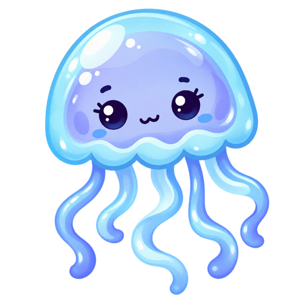

MAKE ATTENTION VISIBLE
它不会提醒你专注，也不会判断你看了什么。它只把浏览中的主题、切换和节奏，变成一只安静的小水母。

主题越多元，水母从浅蓝逐渐走向蓝紫。颜色没有好坏，只是在映射差异。
主题切换越频繁，漂浮范围越大。它不会闪烁、警告或打断页面。
浏览越密集，呼吸和触手动作越快。点击水母，可以看最近15分钟轨迹。
LOCAL BY DESIGN
文章、问题和回答不上传
隐藏水母后仍然继续记录
所有记录7天后彻底删除
随时暂停或立即清除